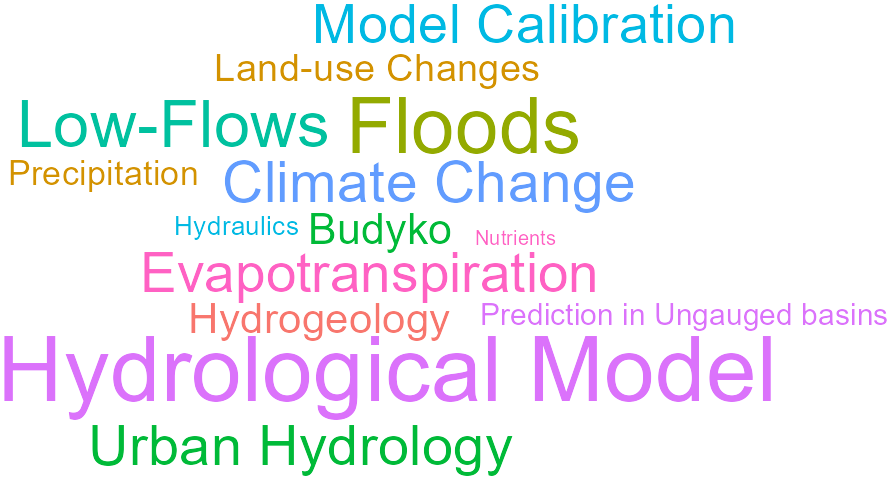

-
Improved predictions in ungauged basins using flood marks
Journal Of Hydrology (2025)
Details DOI -
Multi-objective assessment of hydrological model performances using Nash–Sutcliffe and Kling–Gupta efficiencies on a worldwide large sample of watersheds
Comptes Rendus. Géoscience (2024)
Details DOI -
Multidimensional analysis of NDVI dynamics in response to climate and land use/land cover change in Northwest Algeria
Journal Of Hydrology And Hydromechanics (2024)
Details DOI -
Pitfalls of space-time trading when parametrizing a land use dependent hydrological model
Comptes Rendus. Géoscience (2024)
Details DOI -
Water cycle modelling strengthened by probabilistic integration of field data for groundwater management of a quite unknown tropical volcanic hydrosystem
Comptes Rendus. Géoscience (2024)
Details DOI -
Water use scenarios versus climate change: Investigating future water management of the French part of the Moselle
Journal Of Hydrology: Regional Studies (2024)
Details DOI -
Ensemble precipitation estimates based on an assessment of 21 gridded precipitation datasets to improve precipitation estimations across Madagascar
Journal Of Hydrology: Regional Studies (2023)
Details DOI -
Urban effects on precipitation: Do the diversity of research strategies and urban characteristics preclude general conclusions?
Urban Climate (2023)
Details DOI -
Assessing rainfall global products reliability for water resource management in a tropical volcanic mountainous catchment
Journal Of Hydrology: Regional Studies (2022)
Details DOI -
Evapotranspiration in hydrological models under rising CO2: a jump into the unknown
Climatic Change (2022)
Details DOI -
Investigating hydrological model versatility to simulate extreme flood events
Hydrological Sciences Journal (2022)
Details DOI -
Unraveling the contribution of potential evaporation formulation to uncertainty under climate change
Hydrology And Earth System Sciences (2022)
Details DOI -
Evolution of Arctic rivers recession flow: Global assessment and data-based attribution analysis
Journal Of Hydrology (2021)
Details DOI -
Physically consistent conceptual rainfall–runoff model for urbanized catchments
Journal Of Hydrology (2021)
Details DOI -
Understanding key factors controlling the duration of river flow intermittency: Case of Burkina Faso in West Africa
Journal Of Hydrology: Regional Studies (2021)
Details DOI -
Évolution, modélisation et cartographie des rendements de l’oliveraie dans la province de Jaen en Espagne (1959-2018)
Climatologie (2021)
Details DOI -
Beyond Imperviousness: The Role of Antecedent Wetness in Runoff Generation in Urbanized Catchments
Water Resources Research (2020)
Details DOI -
Crossing the rural–urban boundary in hydrological modelling: How do conceptual rainfall–runoff models handle the specificities of urbanized catchments?
Hydrological Processes (2020)
Details DOI -
Impacts of Urbanization on Watershed Water Balances Across the Conterminous United States
Water Resources Research (2020)
Details DOI -
Random Forest Ability in Regionalizing Hourly Hydrological Model Parameters
Water (2019)
Details DOI -
Étude de la sensibilité des paramètres d’un modèle «rural» sur des bassins versants urbanisés
La Houille Blanche (2019)
Details DOI -
Hydrological impacts of urbanization at the catchment scale
Journal Of Hydrology (2018)
Details DOI -
Landward Perspective of Coastal Eutrophication Potential Under Future Climate Change: The Seine River Case (France)
Frontiers In Marine Science (2018)
Details DOI -
Evaluation of Gridded Meteorological Datasets for Hydrological Modeling
Journal Of Hydrometeorology (2017)
Details DOI -
Process‐based interpretation of conceptual hydrological model performance using a multinational catchment set
Water Resources Research (2017)
Details DOI -
The Quantile Solidarity approach for the parsimonious regionalization of flow duration curves
Hydrological Sciences Journal (2017)
Details DOI -
Which objective function to calibrate rainfall–runoff models for low-flow index simulations?
Hydrological Sciences Journal (2017)
Details DOI -
How should a rainfall‐runoff model be parameterized in an almost ungauged catchment? A methodology tested on 609 catchments
Water Resources Research (2016)
Details DOI -
Modeling approaches to detect land-use changes: Urbanization analyzed on a set of 43 US catchments
Journal Of Hydrology (2016)
Details DOI -
Current runoff variations in the Macta catchment (Algeria): is climate the sole factor?
Hydrological Sciences Journal (2015)
Details DOI -
Transferring global uncertainty estimates from gauged to ungauged catchments
Hydrology And Earth System Sciences (2015)
Details DOI -
Trends in floods in West Africa: analysis based on 11 catchments in the region
Hydrology And Earth System Sciences (2015)
Details DOI -
Évaluation de l’impact de l’urbanisation sur la réponse hydrologique de 172 bassins versants américains
La Houille Blanche (2015)
Details DOI -
Seeking genericity in the selection of parameter sets: Impact on hydrological model efficiency
Water Resources Research (2014)
Details DOI -
Hydrological model parameter instability: A source of additional uncertainty in estimating the hydrological impacts of climate change?
Journal Of Hydrology (2013)
Details DOI -
Impact of climate change on the hydrogeology of two basins in northern France
Climatic Change (2013)
Details DOI -
Impact of river bed morphology on discharge and water levels simulated by a 1D Saint–Venant hydraulic model at regional scale
Journal Of Hydrology (2013)
Details DOI -
Modelling the hydrological impacts of rural land use change
Hydrology Research (2013)
Details DOI -
All that glitters is not gold: the case of calibrating hydrological models
Hydrological Processes (2012)
Details DOI -
A multi-objective calibration framework for rainfall–discharge models applied to karst systems
Journal Of Hydrology (2011)
Details DOI -
Modeling the impact of in-stream water level fluctuations on stream-aquifer interactions at the regional scale
Journal Of Hydrology (2011)
Details DOI -
Évolution potentielle du régime des crues de la Seine sous changement climatique
La Houille Blanche (2011)
Details DOI -
Are seemingly physically similar catchments truly hydrologically similar?
Water Resources Research (2010)
Details DOI -
Data-set cleansing practices and hydrological regionalization: is there any valuable information among outliers?
Hydrological Sciences Journal (2010)
Details DOI -
Estimating potential evapotranspiration without continuous daily data: possible errors and impact on water balance simulations
Hydrological Sciences Journal (2010)
Details DOI -
HESS Opinions "Crash tests for a standardized evaluation of hydrological models"
Hydrology And Earth System Sciences (2009)
Details DOI -
Tilt and strain deformation induced by hydrologically active natural fractures: application to the tiltmeters installed in Sainte-Croix-aux-Mines observatory (France)
Geophysical Journal International (2009)
Details DOI -
Has land cover a significant impact on mean annual streamflow? An international assessment using 1508 catchments
Journal Of Hydrology (2008)
Details DOI -
Spatial proximity, physical similarity, regression and ungaged catchments: A comparison of regionalization approaches based on 913 French catchments
Water Resources Research (2008)
Details DOI -
Impact of limited streamflow data on the efficiency and the parameters of rainfall—runoff models
Hydrological Sciences Journal (2007)
Details DOI -
What is really undermining hydrologic science today?
Hydrological Processes (2007)
Details DOI -
Dynamic averaging of rainfall‐runoff model simulations from complementary model parameterizations
Water Resources Research (2006)
Details DOI -
Impact of biased and randomly corrupted inputs on the efficiency and the parameters of watershed models
Journal Of Hydrology (2006)
Details DOI -
Improvement of rainfall-runoff forecasts through mean areal rainfall optimization
Journal Of Hydrology (2006)
Details DOI -
Model Parameter Estimation Experiment (MOPEX): An overview of science strategy and major results from the second and third workshops
Journal Of Hydrology (2006)
Details DOI -
Une formule simple d’évapotranspiration potentielle pour la modélisation pluie-débit à l’échelle du bassin versant
La Houille Blanche (2006)
Details DOI -
Assimilation de données d’humidité des sols pour la prévision de crues : comparaison d’un modèle pluie-débit conceptuel et d’un modèle intégrant une interface sol-végétation-atmosphère
Revue Des Sciences De L’eau (2005)
Details DOI -
Should Bouchet’s hypothesis be taken into account in rainfall‐runoff modelling? An assessment over 308 catchments
Hydrological Processes (2005)
Details DOI -
Which potential evapotranspiration input for a lumped rainfall-runoff model?
Journal Of Hydrology (2005)
Details DOI -
Which potential evapotranspiration input for a lumped rainfall–runoff model?
Journal Of Hydrology (2005)
Details DOI -
Locating the sources of low‐pass behavior within rainfall‐runoff models
Water Resources Research (2004)
Details DOI -
Assimilation of soil moisture into hydrological models for flood forecasting: a variational approach
Canadian Journal Of Remote Sensing (2003)
Details DOI -
Assimilation of soil moisture into hydrological models: the sequential method
Canadian Journal Of Remote Sensing (2003)
Details DOI -
Sequential assimilation of soil moisture and streamflow data in a conceptual rainfall–runoff model
Journal Of Hydrology (2003)
Details DOI
No matching items